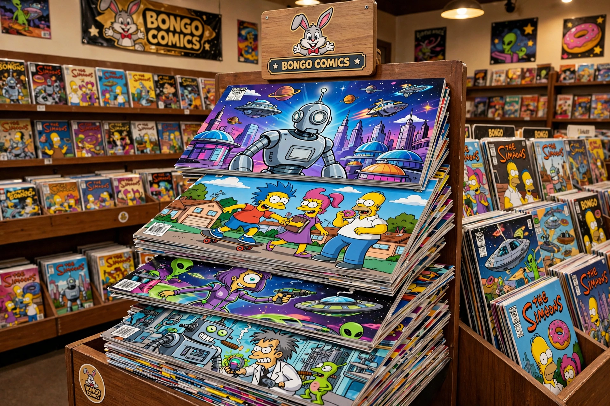

Bongo Comics was an American comic book publisher founded in 1993 by Matt Groening, named after a character in his Life in Hell strip. It was best known for comics based on The Simpsons and Futurama.
| Bongo Comics | |
|---|---|
 | |
| Founded | 1993 |
| Founder | Matt Groening |
| Defunct | 2018 |
| Headquarters | California, US |
Flagship titles included Simpsons Comics (1993–2018, 245 issues), Bart Simpson, Futurama Comics, and SpongeBob Comics. The imprint won Eisner Awards and was known for high production values and rotating creative teams including Bill Morrison.
Bongo ceased publishing in 2018; Simpsons comics later moved to other publishers including Abrams ComicArts collections.